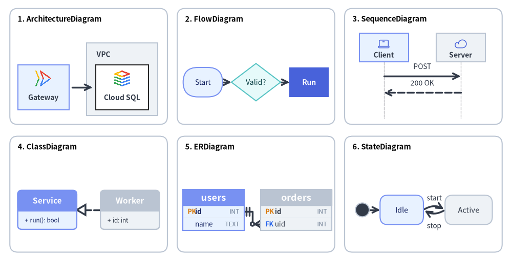
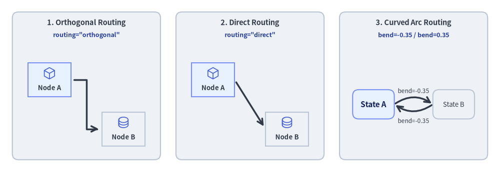
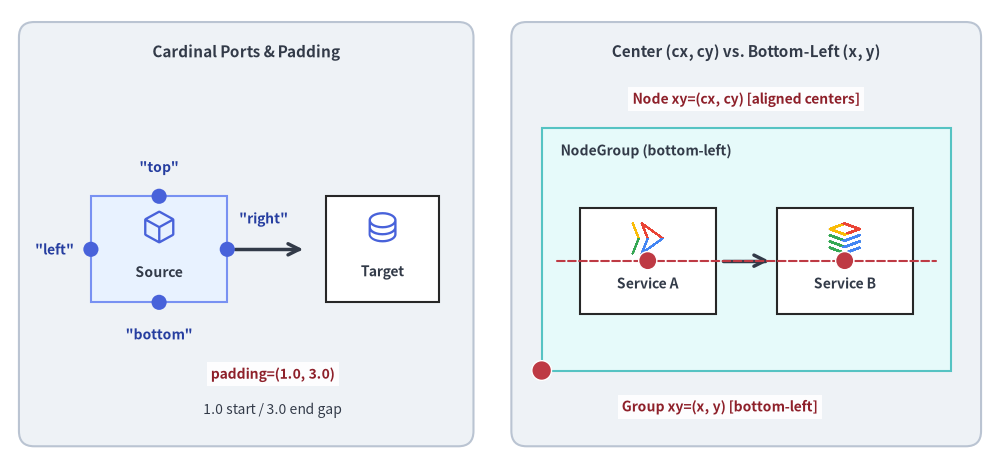
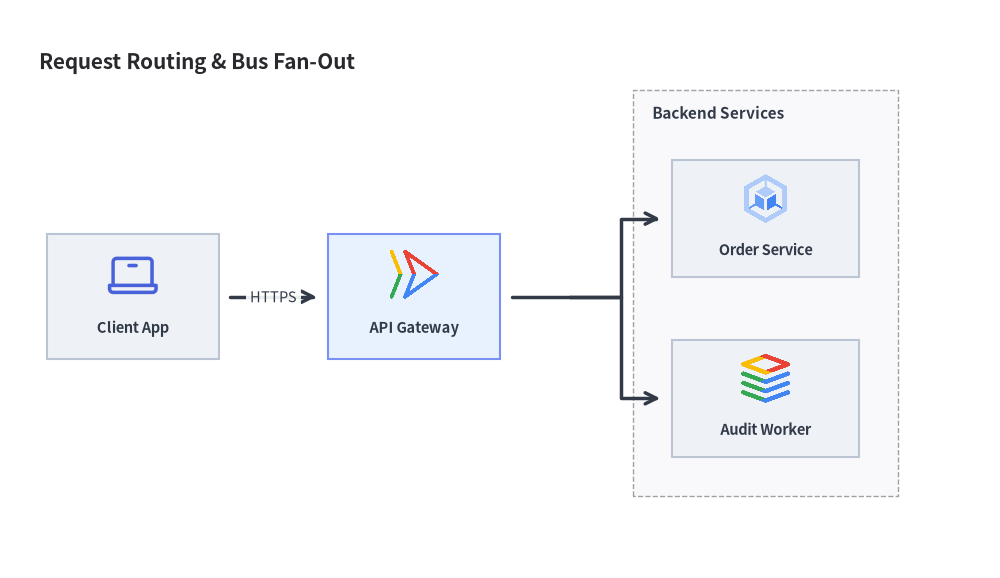

Technical Diagrams Overview & Universal Routing Engine
Drawlib's drawlib.diagrams module provides a declarative, pure-Python visualization suite for cloud architectures, workflow flowcharts, interaction sequence diagrams, UML class hierarchies, relational database schemas, and state machines.
All six diagram engines pair domain-specific visual notations with deterministic (x, y) coordinate control and a universal Connectable routing engine.

Source Code
from drawlib.canvas import save, setup
from drawlib.diagrams.architecture import ArchitectureDiagram, GcpIcon, Node, NodeGroup
from drawlib.diagrams.class_diagram import ClassDiagram, ClassNode
from drawlib.diagrams.er import ERDiagram, Entity
from drawlib.diagrams.flow import Decision, FlowDiagram, Process, Start
from drawlib.diagrams.sequence import Participant, PhosphorIcon, SequenceDiagram
from drawlib.diagrams.state import InitialState, State, StateDiagram
from drawlib.shapes import rectangle
from drawlib.styles import Colors, Styles
from drawlib.text import text
setup(width=130, height=66)
card_style = Styles.Neutral.patch(shape_r=2.0, shape_line_color=Colors.Gray4, shape_fill_color=Colors.White)
title_style = Styles.BlackBold.patch(text_size=10.5, halign="left")
cards = [
(22.5, 49.0, "1. ArchitectureDiagram"),
(65.0, 49.0, "2. FlowDiagram"),
(107.5, 49.0, "3. SequenceDiagram"),
(22.5, 16.5, "4. ClassDiagram"),
(65.0, 16.5, "5. ERDiagram"),
(107.5, 16.5, "6. StateDiagram"),
]
for cx, cy, title in cards:
rectangle((cx, cy), width=40.0, height=29.5, style=card_style)
text((cx - 18.0, cy + 12.0), title, style=title_style)
# 1. ArchitectureDiagram (Top-Left, scale=1.0)
arch = ArchitectureDiagram(
node_style=Styles.Primary,
node_text_style=Styles.DarkBold.patch(text_size=10.0),
edge_style=Styles.DarkBold,
edge_text_style=Styles.Dark.patch(text_size=10.0),
node_card_style=Styles.PrimaryNeutral,
)
grp = arch.add(
NodeGroup(
title="VPC",
width=18.0,
height=18.5,
style=Styles.Neutral,
text_style=Styles.DarkBold.patch(text_size=10.0, halign="left", valign="top"),
),
xy=(18.5, 1.5),
)
n_api = arch.add(Node((13.0, 11.5), "Gateway", icon=GcpIcon.CLOUD_RUN, icon_size=4.5), xy=(7.5, 8.7))
n_db = grp.add(
Node((13.5, 11.5), "Cloud SQL", icon=GcpIcon.CLOUD_SQL, icon_size=4.5, card_style=Styles.White),
xy=(9.0, 7.2),
)
arch.connect(n_api, n_db, padding=0.8)
arch.draw(xy=(3.5, 35.0), scale=1.0)
# 2. FlowDiagram (Top-Center, scale=1.0)
flow = FlowDiagram(
node_style=Styles.Neutral.patch(text_size=10.0),
edge_style=Styles.DarkBold,
edge_text_style=Styles.Dark.patch(text_size=10.0),
)
f_start = flow.add(
Start("Start", width=10.0, height=7.5, style=Styles.PrimaryNeutral.patch(text_size=10.0)),
xy=(5.5, 9.5),
)
f_dec = flow.add(
Decision("Valid?", width=12.5, height=9.5, style=Styles.SecondaryNeutral.patch(text_size=10.0)),
xy=(19.0, 9.5),
)
f_proc = flow.add(
Process("Run", width=10.0, height=7.5, style=Styles.PrimaryFlat, text_style=Styles.WhiteBold.patch(text_size=10.0)),
xy=(32.5, 9.5),
)
f_start.connect(f_dec)
f_dec.connect(f_proc)
flow.draw(xy=(46.0, 35.5), scale=1.0)
# 3. SequenceDiagram (Top-Right, scale=1.0)
seq = SequenceDiagram(
node_style=Styles.Primary,
node_text_style=Styles.DarkBold.patch(text_size=10.0),
edge_style=Styles.DarkBold,
edge_text_style=Styles.Dark.patch(text_size=10.0),
node_card_style=Styles.PrimaryNeutral,
col_width=19.5,
step_y=4.2,
margin=0.2,
)
p_cli = seq.add(Participant((12.5, 7.2), "Client", icon=PhosphorIcon.LAPTOP, icon_size=3.2))
p_srv = seq.add(Participant((12.5, 7.2), "Server", icon=PhosphorIcon.CLOUD, icon_size=3.2, card_style=Styles.Neutral))
p_cli.request(p_srv, "POST")
p_srv.reply(p_cli, "200 OK")
seq.draw(xy=(91.0, 33.6), scale=1.0)
# 4. ClassDiagram (Bottom-Left, scale=1.0)
cd = ClassDiagram(
node_style=Styles.Neutral,
edge_style=Styles.DarkBold,
edge_text_style=Styles.Dark.patch(text_size=10.0),
)
c_base = cd.add(ClassNode(name="Service", width=15.0, style=Styles.PrimaryNeutral), xy=(8.5, 9.5))
c_base.add_method("run", return_type="bool")
c_impl = cd.add(ClassNode(name="Worker", width=15.0, style=Styles.Neutral), xy=(29.5, 9.5))
c_impl.add_attribute("id", type="int")
cd.connect(c_impl, c_base, relationship_type="realization", start_side="left", end_side="right")
cd.draw(xy=(3.5, 3.0), scale=1.0)
# 5. ERDiagram (Bottom-Center, scale=1.0)
er = ERDiagram(
node_style=Styles.Neutral,
edge_style=Styles.DarkBold,
edge_text_style=Styles.Dark.patch(text_size=10.0),
)
e_user = er.add(Entity(name="users", width=15.5, style=Styles.PrimaryNeutral), xy=(8.2, 9.0))
e_user.add_column("id", type="INT", pk=True)
e_user.add_column("name", type="TEXT")
e_ord = er.add(Entity(name="orders", width=18.0, style=Styles.Neutral), xy=(29.2, 9.0))
e_ord.add_column("id", type="INT", pk=True)
e_ord.add_column("uid", type="INT", fk=True)
e_user.connect(e_ord, cardinality="1:*", start_side="right", end_side="left", start_column="id", end_column="uid")
er.draw(xy=(46.0, 3.5), scale=1.0)
# 6. StateDiagram (Bottom-Right, scale=1.0)
sd = StateDiagram(
node_style=Styles.Neutral.patch(text_size=10.5),
edge_style=Styles.DarkBold,
edge_text_style=Styles.Dark.patch(text_size=10.0),
)
s_init = sd.add(InitialState(style=Styles.Dark), xy=(3.0, 9.0))
s_idle = sd.add(
State("Idle", shape="box", width=11.0, height=7.5, style=Styles.PrimaryNeutral.patch(text_size=10.5)),
xy=(13.0, 9.0),
)
s_run = sd.add(
State("Active", shape="box", width=12.0, height=7.5, style=Styles.Neutral.patch(text_size=10.5)),
xy=(30.0, 9.0),
)
sd.connect(s_init, s_idle)
sd.connect(s_idle, s_run, event="start", bend=-0.32, start_side="top_right", end_side="top_left")
sd.connect(
s_run,
s_idle,
event="stop",
bend=-0.32,
start_side="bottom_left",
end_side="bottom_right",
text_style=Styles.Dark.patch(text_size=10.0, valign="top"),
)
sd.draw(xy=(89.0, 3.5), scale=1.0)
save()
Unlike external diagramming tools that depend on Graphviz, PlantUML, or opaque layout heuristics that scramble diagrams when a label changes, drawlib.diagrams offers:
- Deterministic coordinate control: You position elements with precision while Drawlib automatically handles boundary clipping, line offsets, and arrow alignments.
- Universal
Connectableinterface: Nodes, entities, classes, boundaries, and junctions implement a common protocol for orthogonal, direct, and curved connections. - Rich vector and cloud icons: Built-in access to 259 official Google Cloud Platform (
GcpIcon) icons and 1,531 Phosphor (PhosphorIcon) icons. - Native theming integration: All diagrams use standard
Styles,Colors, andFontmodels.
Looking for Automatic Graph Layout?
When you want to declare nodes, edges, and clusters without specifying(x, y)coordinates—or scaffold initial coordinates usingexport_code()—see Chapter 6: Auto-Layout Graphs (drawlib.graph).
1. The 6 Technical Diagram Engines (drawlib.diagrams)
| Diagram Category | Class Name | Module Import | Primary Use Case | Guide Link |
|---|---|---|---|---|
| Cloud & Architecture | ArchitectureDiagram |
drawlib.diagrams.architecture |
Microservices, VPC boundaries, cloud icon topologies | Architecture Diagrams |
| Workflow & Processes | FlowDiagram |
drawlib.diagrams.flow |
ISO 5807 flowcharts, cross-functional swimlanes | Flow Diagrams |
| API Sequences & Protocols | SequenceDiagram |
drawlib.diagrams.sequence |
Chronological message lifelines, condition blocks | Sequence Diagrams |
| Object-Oriented Structure | ClassDiagram |
drawlib.diagrams.class_diagram |
UML 2.0 3-compartment class cards, 6 UML relationships | UML Class Diagrams |
| Relational Schemas | ERDiagram |
drawlib.diagrams.er |
Crow's Foot physical schemas, column-level PK/FK anchors | ER Diagrams |
| Statecharts & Automata | StateDiagram |
drawlib.diagrams.state |
Finite state machines, action compartments, curved arcs | State Machine Diagrams |
2. Universal Connection Engine (Connectable)
All diagram elements (nodes, entities, classes, boundaries, and junctions) implement the Connectable protocol:

Source Code
from drawlib.canvas import save, setup
from drawlib.diagrams.architecture import ArchitectureDiagram, Node, PhosphorIcon
from drawlib.diagrams.state import State, StateDiagram
from drawlib.shapes import rectangle
from drawlib.styles import Colors, Styles
from drawlib.text import text
setup(width=132, height=52)
panel_style = Styles.Neutral.patch(shape_r=2.0, shape_line_color=Colors.Gray4)
header_style = Styles.DarkBold.patch(text_size=11.0)
code_style = Styles.DarkBold.patch(text_size=10.0, text_color=Colors.Primary5)
# Panel 1: Orthogonal Z-Bend
rectangle((22.5, 26), width=40, height=46, style=panel_style)
text((22.5, 45.0), "1. Orthogonal Routing", style=header_style)
text((22.5, 40.5), 'routing="orthogonal"', style=code_style)
d1 = ArchitectureDiagram(
node_style=Styles.Primary,
node_text_style=Styles.DarkBold.patch(text_size=10.0),
edge_style=Styles.DarkBold,
edge_text_style=Styles.Dark.patch(text_size=10.0),
node_card_style=Styles.PrimaryNeutral,
)
a1 = d1.add(Node((13, 11), "Node A", icon=PhosphorIcon.CUBE, icon_size=4.2), xy=(9.5, 24.0))
b1 = d1.add(
Node((13, 11), "Node B", icon=PhosphorIcon.DATABASE, icon_size=4.2, card_style=Styles.Neutral),
xy=(29.5, 9.5),
)
d1.connect(a1, b1, routing="orthogonal", padding=0.8)
d1.draw(xy=(3.0, 2.5))
# Panel 2: Direct Straight
rectangle((66.0, 26), width=40, height=46, style=panel_style)
text((66.0, 45.0), "2. Direct Routing", style=header_style)
text((66.0, 40.5), 'routing="direct"', style=code_style)
d2 = ArchitectureDiagram(
node_style=Styles.Primary,
node_text_style=Styles.DarkBold.patch(text_size=10.0),
edge_style=Styles.DarkBold,
edge_text_style=Styles.Dark.patch(text_size=10.0),
node_card_style=Styles.PrimaryNeutral,
)
a2 = d2.add(Node((13, 11), "Node A", icon=PhosphorIcon.CUBE, icon_size=4.2), xy=(9.5, 24.0))
b2 = d2.add(
Node((13, 11), "Node B", icon=PhosphorIcon.DATABASE, icon_size=4.2, card_style=Styles.Neutral),
xy=(29.5, 9.5),
)
d2.connect(a2, b2, routing="direct", padding=0.8)
d2.draw(xy=(46.5, 2.5))
# Panel 3: Curved Arc (bend)
rectangle((109.5, 26), width=40, height=46, style=panel_style)
text((109.5, 45.0), "3. Curved Arc Routing", style=header_style)
text((109.5, 40.5), "bend=-0.35 / bend=0.35", style=code_style)
sd = StateDiagram(
node_style=Styles.PrimaryNeutral.patch(text_size=10.5),
edge_style=Styles.DarkBold,
edge_text_style=Styles.Dark.patch(text_size=10.0),
)
s_a = sd.add(State("State A", shape="box", width=11.0, height=8.5), xy=(7.5, 18.0))
s_b = sd.add(
State("State B", shape="box", width=11.0, height=8.5, style=Styles.Neutral.patch(text_size=10.5)),
xy=(32.5, 18.0),
)
sd.connect(
s_a,
s_b,
label="bend=-0.35",
bend=-0.35,
start_side="top_right",
end_side="top_left",
)
sd.connect(
s_b,
s_a,
label="bend=-0.35",
bend=-0.35,
start_side="bottom_left",
end_side="bottom_right",
text_style=Styles.Dark.patch(text_size=10.0, valign="top"),
)
sd.draw(xy=(89.5, 2.0))
save()
Connection Routing Strategies
routing="orthogonal"(Default for Architecture, Flow, Class, and ER): Computes clean right-angled Z-bends and L-bends. Avoids overlapping node bounding boxes when possible.routing="direct": Draws a straight Euclidean line between source and target anchor points, clipping cleanly at each entity's outer boundary.bend=float(Widely used in State Diagrams): Generates a quadratic Bezier or arc curve between nodes. A positive bend curves to the left/top, while a negative bend curves to the right/bottom, allowing elegant bidirectional transitions.
Attachment Sides and Edge Padding
start_side/end_side: Set explicitly to"left","right","top","bottom", or"auto"(resolved by nearest Euclidean distance;StateDiagramalso supports diagonal sides"top_left","top_right","bottom_left","bottom_right").padding:padding=1.5: Adds a 1.5-unit gap between the edge endpoint and the node perimeter.padding=(1.0, 3.0): Configures asymmetric padding (1.0 at start, 3.0 at end).
Coordinate Origin Principle (center vs. bottom-left)
Understanding how coordinates are anchored across drawlib.diagrams ensures crisp alignment:
- Node & Card Placement (
center(cx, cy)): Callingd.add(item, xy=(cx, cy))places the geometric center(cx, cy)for all vertex cards and symbols:Node(ArchitectureDiagram),FlowNode/Start/End/Process/Decision/Data(FlowDiagram),ClassNode(ClassDiagram),Entity(ERDiagram), andState/StateNodeBase(StateDiagram). Giving two horizontally or vertically aligned nodes the sameyorxcoordinate aligns their centers on a straight line. - Group Origin & Diagram Rendering (
bottom-left(x, y)):d.draw(xy=(x, y), *, scale=1.0)always anchors the diagram's bottom-left origin at(x, y)on the canvas.- In
ArchitectureDiagram,d.add(group, xy=(x, y))sets the bottom-left local origin forNodeGroup(when fixedwidthandheightare specified onNodeGroup, the box spans[x, x + width] × [y, y + height]; when auto-sized, child coordinates passed togroup.add(child, xy=...)are relative togroup.xy).

Source Code
from drawlib.canvas import save, setup
from drawlib.diagrams.architecture import ArchitectureDiagram, GcpIcon, Node, NodeGroup, PhosphorIcon
from drawlib.lines import line
from drawlib.shapes import circle, rectangle
from drawlib.styles import Colors, Styles
from drawlib.text import text
setup(width=132, height=62)
panel_style = Styles.Neutral.patch(shape_r=2.0, shape_line_color=Colors.Gray4)
header_style = Styles.DarkBold.patch(text_size=11.0)
mono_style = Styles.DarkBold.patch(text_size=10.0, text_color=Colors.Primary5)
anchor_dot_style = Styles.DangerFlat.patch(shape_line_color=Colors.White, shape_line_width=1.0)
anchor_lbl_style = Styles.DarkBold.patch(
text_size=10.0,
text_color=Colors.Danger5,
text_bg_fill_color=(255, 255, 255, 0.9),
)
# Left Panel: 4 Cardinal Attachment Ports & Asymmetric Padding
rectangle((32.5, 31), width=60, height=56, style=panel_style)
text((32.5, 55.0), "Cardinal Ports & Padding", style=header_style)
d_ports = ArchitectureDiagram(
node_style=Styles.Primary,
node_text_style=Styles.DarkBold.patch(text_size=10.0),
edge_style=Styles.DarkBold,
edge_text_style=Styles.Dark.patch(text_size=10.0),
node_card_style=Styles.PrimaryNeutral,
)
src = d_ports.add(Node((18, 14), "Source", icon=PhosphorIcon.CUBE, icon_size=4.8), xy=(21.0, 29.0))
dst = d_ports.add(
Node((15, 14), "Target", icon=PhosphorIcon.DATABASE, icon_size=4.8, card_style=Styles.White),
xy=(50.5, 29.0),
)
d_ports.connect(src, dst, padding=(1.0, 3.0))
d_ports.draw(xy=(0.0, 0.0))
# Port dots on Source Card (center at (21, 29), size 18x14 -> top=(21,36), bottom=(21,22), left=(12,29), right=(30,29))
for px, py in [(21, 36), (21, 22), (12, 29), (30, 29)]:
circle((px, py), radius=1.0, style=Styles.PrimaryFlat)
text((21, 39.8), '"top"', style=mono_style)
text((21, 17.8), '"bottom"', style=mono_style)
text((7.2, 29.0), '"left"', style=mono_style)
text((34.8, 33.0), '"right"', style=mono_style)
# Highlight asymmetric padding=(1.0, 3.0)
text((36.0, 12.5), "padding=(1.0, 3.0)", style=anchor_lbl_style)
text((36.0, 7.8), "1.0 start / 3.0 end gap", style=Styles.Dark.patch(text_size=10.0))
# Right Panel: Node Center (cx, cy) vs. NodeGroup Bottom-Left (x, y)
rectangle((98.5, 31), width=62, height=56, style=panel_style)
text((98.5, 55.0), "Center (cx, cy) vs. Bottom-Left (x, y)", style=header_style)
d_orig = ArchitectureDiagram(
node_style=Styles.Primary,
node_text_style=Styles.DarkBold.patch(text_size=10.0),
edge_style=Styles.DarkBold,
edge_text_style=Styles.Dark.patch(text_size=10.0),
node_card_style=Styles.White,
)
grp = d_orig.add(
NodeGroup(
title="NodeGroup (bottom-left)",
width=54.0,
height=32.0,
style=Styles.SecondaryNeutral,
text_style=Styles.DarkBold.patch(text_size=10.0, halign="left", valign="top"),
),
xy=(71.5, 13.0),
)
n1 = grp.add(Node((18, 14), "Service A", icon=GcpIcon.CLOUD_RUN, icon_size=4.8), xy=(14.0, 14.5))
n2 = grp.add(Node((18, 14), "Service B", icon=GcpIcon.CLOUD_SQL, icon_size=4.8), xy=(40.0, 14.5))
d_orig.connect(n1, n2, padding=1.0)
d_orig.draw(xy=(0.0, 0.0))
# Shared horizontal Y alignment guide line through node centers (y = 13 + 14.5 = 27.5)
line((73.5, 27.5), (123.5, 27.5), style=Styles.DangerDashed.patch(shape_line_width=1.2))
# Red anchor dots for NodeGroup bottom-left (71.5, 13.0) and Node centers (85.5, 27.5), (111.5, 27.5)
circle((71.5, 13.0), radius=1.3, style=anchor_dot_style)
text((95.0, 8.2), "Group xy=(x, y) [bottom-left]", style=anchor_lbl_style)
circle((85.5, 27.5), radius=1.2, style=anchor_dot_style)
circle((111.5, 27.5), radius=1.2, style=anchor_dot_style)
text((98.5, 48.8), "Node xy=(cx, cy) [aligned centers]", style=anchor_lbl_style)
save()
3. Waypoints & Bus Lines with Junction
A Junction represents a zero-dimension coordinate (x, y) on the canvas. It allows you to:
- Fork Bus Lines: Split a single wire into multiple downstream connections (or use
node.fork([target1, target2], at_x=...)inArchitectureDiagramandFlowDiagram). - Merge Paths: Combine multiple upstream error or completion paths into a single successor node.
- Dynamic Insertion: Calling
edge.add_point(xy)converts an intermediate edge coordinate into a reusableJunction.
from drawlib.canvas import save, setup
from drawlib.diagrams.architecture import ArchitectureDiagram, GcpIcon, Node, NodeGroup, PhosphorIcon
from drawlib.styles import Styles
setup(width=128, height=74)
d = ArchitectureDiagram(
node_style=Styles.Primary,
node_text_style=Styles.DarkBold.patch(text_size=10.5),
edge_style=Styles.DarkBold,
edge_text_style=Styles.Dark.patch(text_size=10.5),
node_card_style=Styles.Neutral,
title="Request Routing & Bus Fan-Out",
)
client = d.add(Node((22, 16), "Client App", icon=PhosphorIcon.LAPTOP, icon_size=7.0), xy=(13.0, 32.0))
gateway = d.add(
Node((22, 16), "API Gateway", icon=GcpIcon.CLOUD_RUN, icon_size=7.0, card_style=Styles.PrimaryNeutral),
xy=(49.0, 32.0),
)
cluster = d.add(
NodeGroup(
title="Backend Services",
padding=5.0,
text_style=Styles.DarkBold.patch(text_size=11.0, halign="left", valign="top"),
),
xy=(77.0, 6.0),
)
svc_a = cluster.add(
Node((24, 15), "Order Service", icon=GcpIcon.GOOGLE_KUBERNETES_ENGINE, icon_size=7.0),
xy=(17.0, 36.0),
)
svc_b = cluster.add(Node((24, 15), "Audit Worker", icon=GcpIcon.CLOUD_SQL, icon_size=7.0), xy=(17.0, 13.0))
d.connect(client, gateway, label="HTTPS", padding=1.5)
gateway.fork([svc_a, svc_b], at_x=69.0, padding=1.5)
d.draw(xy=(4.0, 4.0))
save()

4. Unified Component Lifecycle (show, Mutable Elements, Sizing, and scale)
All six diagram classes (ArchitectureDiagram, FlowDiagram, SequenceDiagram, ClassDiagram, ERDiagram, StateDiagram) share a unified lifecycle for static and multi-frame rendering (see Animating Diagrams):
- Visibility Control (
show: bool = True):- Every element constructor (
Node,NodeGroup,FlowNode,Lane,Participant,ParticipantGroup,State,ClassNode,Entity) and registration method (d.add(..., show=True),.connect(..., show=True)) acceptsshow: bool = True. - Fixed-Layout Guarantee: Hidden elements (
show=False) still participate in bounding-box, group, lane, and lifeline calculations so visible elements never jump or shift when toggling.show. - Connected Edge & Dangling
JunctionAuto-Hiding: If either endpoint of a connection (EdgeinArchitectureDiagram,FlowEdgeinFlowDiagram,MessageinSequenceDiagram,ClassRelationshipinClassDiagram,RelationshipinERDiagram,StateTransitioninStateDiagram) hasshow=False(or is inside a hidden group), the connection is automatically skipped duringdraw(). Furthermore, if an intermediateJunctionhas no visible downstream path, its upstream wire segment is also automatically hidden.
- Every element constructor (
- Mutable Element Instances:
d.add(...)and.connect(...)return the registered element instance (Node,Edge,FlowNode,FlowEdge,Participant,Message,Block,Note,ClassNode,ClassRelationship,Entity,Relationship,State,StateTransition), allowing in-place mutation of.show,.style, and.text_styleacross animation frames.
- Diagram Size & Bounding Box Queries (
get_size()andget_bounds()):d.get_size() -> tuple[float, float]: Supported on all 6 diagram classes, returning the computed or explicit(width, height)of the diagram in canvas units.d.get_bounds() -> tuple[float, float, float, float]: Supported onClassDiagramandStateDiagram, returning the tight enclosing bounding box(min_x, min_y, max_x, max_y)of all registered nodes (and self-transition loops inStateDiagram).
- Proportional Scaling & Translation (
draw(xy=(0.0, 0.0), *, scale: float = 1.0)):- Every diagram's
draw(xy=(0.0, 0.0), *, scale: float = 1.0)translates the diagram byxyand proportionally scales all node coordinates, widths/heights, icon sizes, line widths, and font sizes byscale.
- Every diagram's
5. Choosing Between drawlib.diagrams and drawlib.graph
When starting a new architecture or workflow diagram:
- Choose
drawlib.diagrams(this chapter) when you want domain-specific visual notations (cloud icon cards, ISO flowchart swimlanes, UML sequence lifelines, 3-compartment UML classes, Crow's Foot ER tables, or UML statecharts) and deterministic coordinate control. - Choose
drawlib.graph(Chapter 6) when you want automatic topological coordinate solving (ArchitectureGraph,LayerGraph,TreeGraph,RadialGraph,GridGraph), or when you want to solve an initial layout automatically and export editable coordinate code viag.export_code().
6. Chapter Navigation
Explore each dedicated diagram guide:
- Architecture Diagrams: Microservices, VPC boundaries, and cloud icon topologies (
GcpIcon,PhosphorIcon). - Flow Diagrams: ISO 5807 flowchart symbols with vertical and horizontal multi-lane workflows.
- Sequence Diagrams: Chronological API interactions, message styles, activation bars, and
withcondition blocks. - UML Class Diagrams: 3-compartment class cards with the 6 standard UML relationships.
- ER Diagrams: Relational database schemas with Information Engineering (Crow's Foot) notation and column-level anchors.
- State Machine Diagrams: UML statecharts, internal action compartments, pseudo-states, and curved transitions.